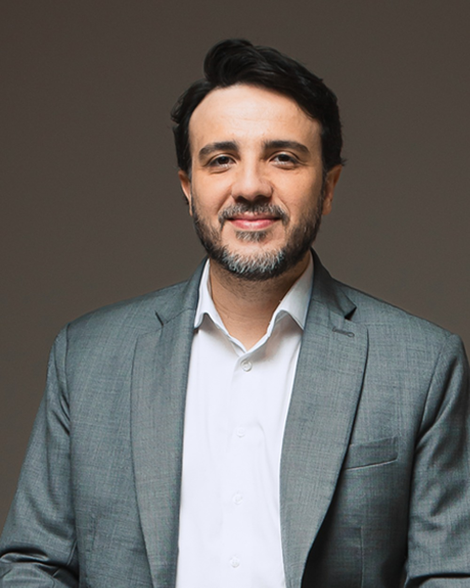

Liberdade econômica
Ampliar a Lei de Liberdade Econômica: menos burocracia, menos alvará, mais gente empreendendo e gerando emprego em São Paulo.
O vereador mais produtivo da história de Sorocaba agora em Missão por São Paulo. Fiscalização implacável, liberdade econômica e resultado de verdade — do jeito que o Estado inteiro precisa.
Aguardando a foto oficial em alta resolução
Recordes registrados na Câmara Municipal de Sorocaba em um único primeiro mandato. Não é promessa: é histórico comprovado.
Eleito em 2024 com o número 44.190, Ítalo se tornou o 3º vereador mais votado da história de Sorocaba, com 3,03% dos votos válidos da cidade — e transformou cada voto em trabalho.
Primeiro parlamentar de Sorocaba a atingir 5 mil e depois 7 mil proposituras em um único mandato.
Quase 2 mil requerimentos de fiscalização e mais de 100 representações no MP e órgãos de controle.
Mais de 600 fiscalizações no tema saúde, com visitas presenciais a todas as UBSs, UPHs e PAs do município.
Votou contra o aumento salarial dos vereadores, contra cargos de indicação política e propôs a proibição de nepotismo no Executivo.
Projeto que informatiza o serviço público: consulta marcada de casa e prontuário eletrônico na saúde.
Ampliar a Lei de Liberdade Econômica: menos burocracia, menos alvará, mais gente empreendendo e gerando emprego em São Paulo.
Levar o modelo do Governo Digital para o Estado: consulta marcada pelo celular, prontuário eletrônico e fila transparente.
O método que virou referência em Sorocaba — auditoria de contratos milionários, transparência em licitação e denúncia ao MP — aplicado ao orçamento estadual.
Expandir a Lei do Sandbox: ambiente regulatório para startups e novas tecnologias nascerem e testarem em São Paulo.
Valorização das polícias, integração de dados e tecnologia no combate ao crime organizado.
Defesa de saúde, trânsito, obras e segurança com a mesma cobrança dura que marcou o mandato na Câmara.

Foto — Renan SantosDo movimento nas ruas ao partido nas urnas. Em 2026 a Missão disputa o Planalto — e São Paulo é peça-chave nessa virada.
Fundador do MBL e presidente do Partido Missão, Renan Santos teve a candidatura à Presidência da República oficializada em 1º de agosto de 2026, com o reservista Aroldo Medina como vice. Ítalo Moreira é parte dessa frente em São Paulo.
Partido Missão — preto, branco e amarelo, com a onça-pintada como símbolo. O 30º partido registrado no TSE, homologado em novembro de 2025.
Fiscalizações ao vivo, bastidores da Câmara e prestação de contas diária. No Instagram, o mandato é transparente de verdade — sem filtro e sem assessoria maquiando resultado.
Seguir @italomoreiraspPrévia ilustrativa — na versão final, feed real integrado
Campanha financiada pelo cidadão, não por grupos de interesse. Doação oficial e transparente pela plataforma QueroApoiar, com recibo e prestação de contas à Justiça Eleitoral.
💛 Doar agora queroapoiar.com.br/italomoreiraCadastre-se e entre no grupo oficial de apoiadores da sua região.
Mobilize — receba materiais, adesivos e conteúdo para compartilhar.
Multiplique — cada apoiador que traz um amigo dobra a nossa força.